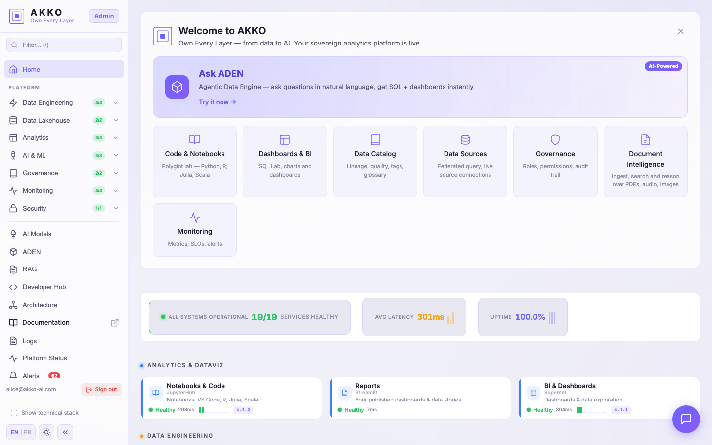
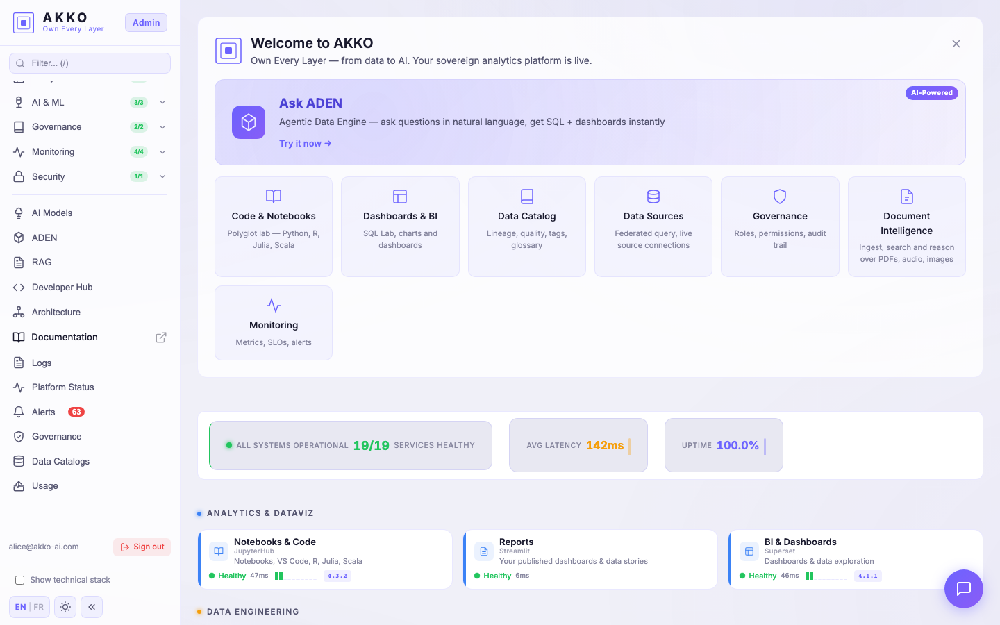
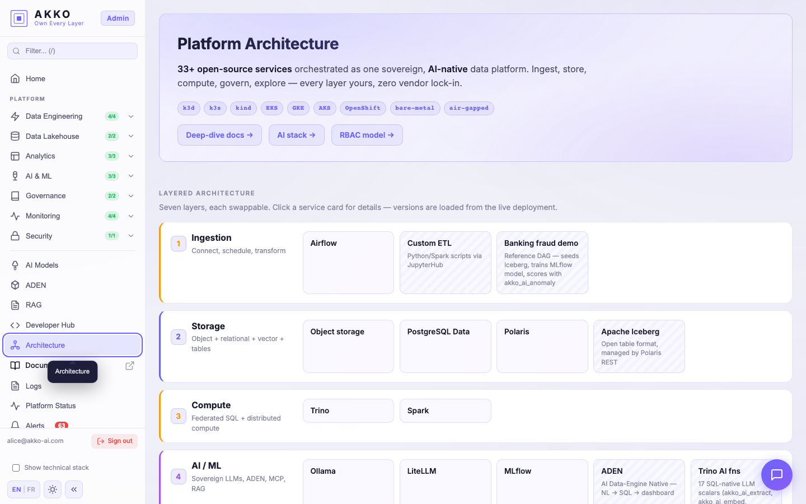
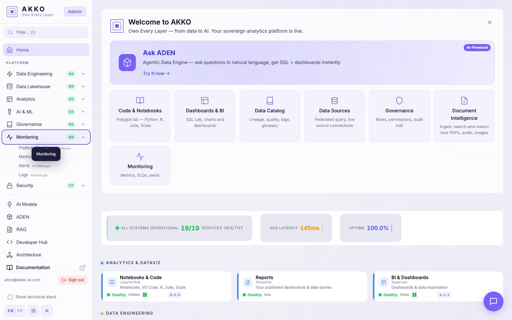

01
Sovereign by design
Cloud. On-prem. Air-gapped. Your data never leaves your perimeter, your AI never calls a foreign API, your keys stay with you. Built for regulated industries.
AKKO unifies your data and your AI on infrastructure you own. Cloud, on-prem, or air-gapped. No vendor lock-in. No data leakage. No exceptions.
AKKO unifie vos données et votre IA sur une infrastructure que vous possédez. Cloud, on-prem ou air-gapped. Aucun verrouillage. Aucune fuite. Aucune exception.
Each layer is independent and replaceable. Hover or click any card to see what it does for you in production.
Chaque couche est indépendante et remplaçable. Survolez ou cliquez une carte pour voir ce qu’elle fait en production.
ADEN turns natural language into governed SQL, runs it on your federated catalog, returns a chart you can share. RBAC at every step. No data leaves your perimeter. No foreign API. No surprises.
ADEN traduit le langage naturel en SQL gouverné, l’exécute sur votre catalogue fédéré, renvoie un graphe que vous pouvez partager. RBAC à chaque étape. Aucune donnée ne sort de votre périmètre.
SELECT account_id_masked,
SUM(amount) AS total_eur,
COUNT(*) AS txns
FROM banking.fact_txn
WHERE fraud_score > 0.85
AND ts > now() - INTERVAL '7 days'
GROUP BY account_id_masked
ORDER BY total_eur DESC
LIMIT 10;Audit receipt: query #f9a3d · user alice@akko-admin · row policy banking.fraud applied · 0.8s
Reçu d’audit : requête #f9a3d · alice@akko-admin · politique banking.fraud appliquée · 0.8s
Every prompt routes through RBAC, row policy, column masking. The AI cannot show what the user cannot see.
Chaque prompt passe par RBAC, politique de lignes, masquage de colonnes. L’IA ne peut pas montrer ce que l’utilisateur n’a pas le droit de voir.
Private LLMs run on your infrastructure. No prompt, no schema, no answer ever leaves your perimeter.
LLMs privés sur votre infrastructure. Aucun prompt, schéma ou réponse ne sort de votre périmètre.
Every answer carries a receipt: scope, plan, SQL, policies applied, latency. Replayable, exportable, signable.
Chaque réponse porte un reçu : scope, plan, SQL, politiques, latence. Rejouable, exportable, signable.
Cloud. On-prem. Air-gapped. Your data never leaves your perimeter, your AI never calls a foreign API, your keys stay with you. Built for regulated industries.
One platform for the full lifecycle — ingest, store, transform, query, model, serve. Analytics and AI share the same governance, the same identity, the same lineage.
Every layer is replaceable. No proprietary format, no exit barrier, no vendor lock-in. The platform adapts to you — not the reverse.
Cloud. On-prem. Air-gapped. Vos données ne sortent jamais de votre périmètre, votre IA n’appelle aucune API étrangère, vos clés restent chez vous. Conçue pour les industries régulées.
Une plateforme pour tout le cycle — ingestion, stockage, transformation, requête, modèles, services. Analytique et IA partagent la même gouvernance, la même identité, le même lignage.
Chaque couche est remplaçable. Aucun format propriétaire, aucune barrière de sortie, aucun verrouillage. La plateforme s’adapte à vous — jamais l’inverse.
Captured from demo.akko-ai.com — the same platform we ship. Click any screen to enlarge.
Capturés sur demo.akko-ai.com — la plateforme que nous livrons. Cliquez pour agrandir.





Want a guided tour? Request a demo · we walk you through with your own data.
Envie d’une visite guidée ? Demandez une démo · on vous guide avec vos propres données.
End-to-end pipelines from raw transactions to risk dashboards, with column-level masking on PII and full audit trail for the regulator.
A national-scale climate-impact score for territories. Geospatial data, scenario analytics, and explainable AI — running entirely on sovereign infrastructure.
Patient data stays on-site, AI assistants stay local, dashboards stay open. Researchers move fast, compliance officers stay calm.
Pipelines de bout en bout, des transactions brutes aux tableaux de risque, avec masquage colonne sur PII et journal d’audit complet pour le régulateur.
Un score d’impact climatique à l’échelle d’un territoire. Données géospatiales, analyses de scénarios, IA explicable — le tout sur une infrastructure souveraine.
Les données patients restent sur site, les assistants IA restent locaux, les tableaux restent ouverts. Les chercheurs avancent, les responsables conformité respirent.
Get a guided demo on your data, in your environment. We bring the platform; you keep the deployment, the keys and the data.
Obtenez une démo guidée sur vos données, dans votre environnement. Nous apportons la plateforme ; vous gardez le déploiement, les clés et les données.